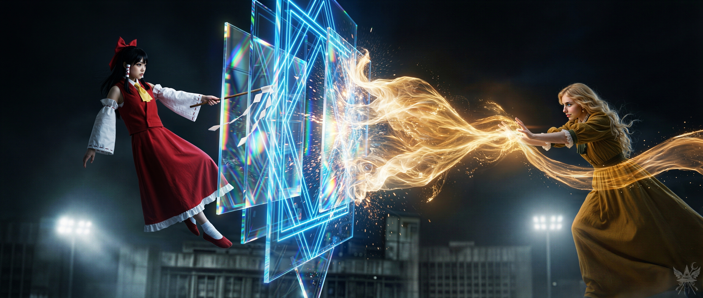
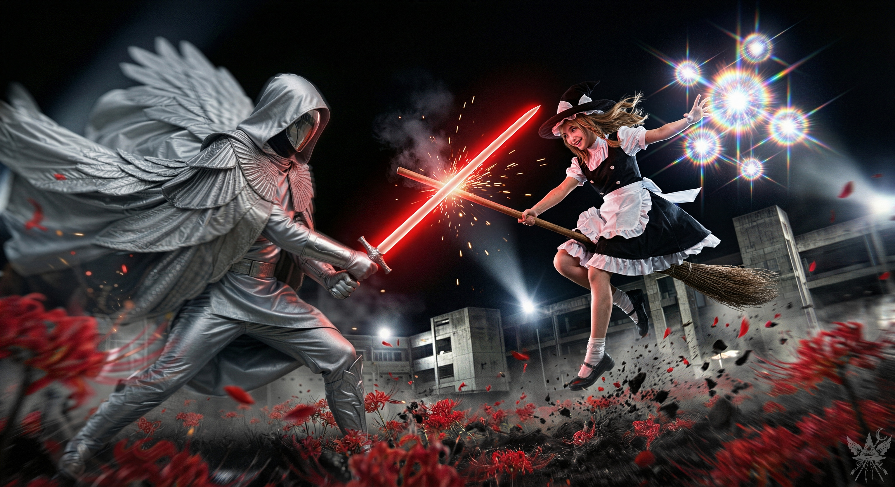
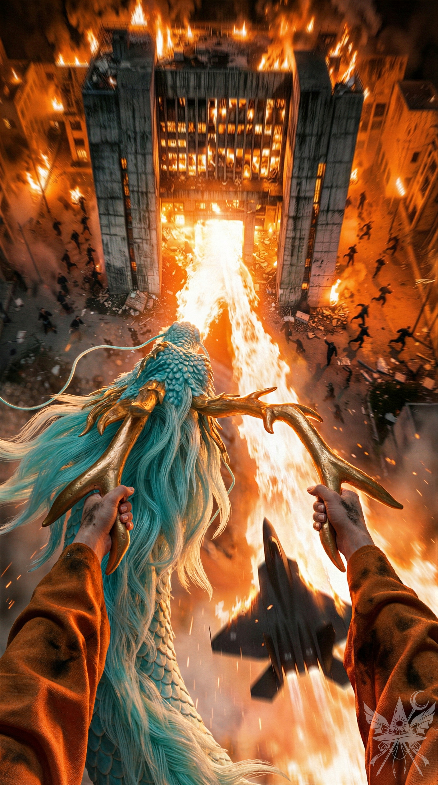
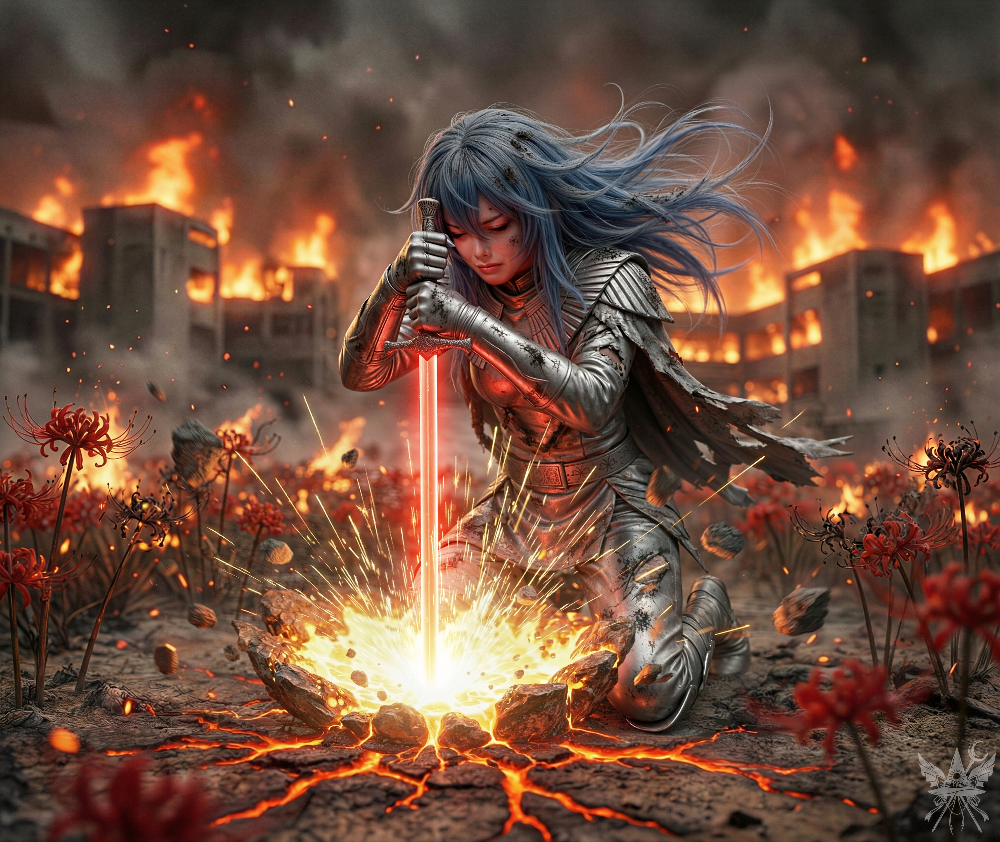

「……あんたがいるだけで、この世界の理が歪む」
霊夢の放った言葉は、確かに核心を突いていた。彼女が守り抜きたいのは、己が信じる世界の秩序――誰かが魂の行き先を管理し、決定してくれる、そんな安穏とした箱庭なのだ。
暗澹たる空を見上げ、ふと唇の端を歪める。これも天の采配だとでも言うのだろうか。
神など信じていなくとも、因果応報やカルマといった、すべてを裁く絶対的な上位存在がどこかにいると、人は心の奥底で縋りたがる。それに仕える者もいれば、罰に怯える者もいる。不公平な運命を呪う者すら、結局はその不可視の存在に運命を委ねているのだ。
「宇宙の塵に過ぎない自分に、何ができるというのか」
と。
だが、もしこの世界の真実が、もっと無機質で残酷なものだったとしたら。
『……こんな窮屈な生活、うんざりしているのでしょう？ 自由気ままな巫女……悪くないと思わない？』
かつて囁いたあの甘い毒が、すべての始まりだったのかもしれない。最も厳格に秩序を守るべき巫女が、あんな破滅的な渇望を秘めていたとは。
そして今、霊夢の魂に巣食う二つの側面が、戦場という名の坩堝で激突しようとしている。このまま傍観者に徹するか、それとも。
（運命などない。あるのは、自ら切り開く道だけだ。ここで感情に流されて計画を狂わせるわけにはいかない。無意味な一騎打ちなど、非効率の極みね）
張り詰めた思考を現実に引き戻し、隣で恐怖に縛り付けられているカナの頬を、思いきり平手打ちした。
乾いた音が極度の無風空間に響く。カナはよろめき、殺意に満ちた目でこちらを睨みつけた。だが、霊夢の存在に呑まれかけていた意識は、その痛みで強引に引き戻されたようだ。
「……霊夢とやり合うつもり？ 正気なの。命を落とすわよ」
赤く腫れた頬に手を当てながら、カナは呆然と呟いた。
「こんなあなた、初めて」
「私の本性を知らないだけよ。……いいから、この装甲から離れないで」
冷たく言い放ち、傍らを浮遊する創造主へ視線を向ける。
「キクリ様。私とカナを敵の攻撃からお守りください。絶対に、この防御を破らせてはいけません」
さらに、前方の銀翼の指揮官へも鋭く命じる。
「シューニャ、天使の軍勢を率いて死神たちを蹴散らしなさい！ あなたの獲物は、あの魔女よ」
言葉を紡ぐたび、喉の奥から煮えたぎるような熱が込み上げてくる。胸郭から全身の血管へと駆け巡るその熱量は、首元のヴィシュッダ・チャクラを激しく回転させ、まるでジェットエンジンのタービンが唸りを上げるような轟音を内側で響かせた。
熱に浮かされながら顔を上げ、巨大な龍へと言葉を叩きつける。
「閻魔は、風太様を解放する気などありません。この彼岸ごと、滅ぼすべきです、龍神様！」
研ぎ澄まされた刃のような扇動が、絶対者の逆鱗に突き刺さる。張り詰めた静寂が場を支配したのは、ほんの一瞬だった。
巨竜が猛然と鎌首をもたげたのとほぼ同時に、照準を四季映姫へ合わせ、発射ボタンを躊躇いなく押し込んだ。
視界の先が紅蓮の炎に飲み込まれる。暴れ狂う龍神の圧倒的な質量と熱量がすべてを遮り、もはや正確な目標など定められない。闇雲にトリガーを引き続けるしかなかった。
「いつまでも手こずっているんじゃないわよ。誰のおかげで生かされていると思っているの」
炎の向こう側から、霊力がみなぎる御幣を構えた霊夢の冷酷な声が響く。
だが、我に返ったカナはもうその挑発には乗らなかった。兵器の操縦席に置かれたリュックサックから赤いリボンのついた帽子を愛おしそうに取り出し、優雅に被る。そして、まるで世間話でもするかのように、キクリへ耳打ちした。
「キクリ様。この巫女が菊界に無断で侵入し、コンガラ様に刃向かったことを覚えていらっしゃいますか？ 彼女のせいで、キクリ様はまともに会話もできなくなってしまわれたのですよね」
「この娘が博麗霊夢か……！ なるほど……！」
純粋な好奇心と神としての威圧感をないまぜにして、キクリが声を弾ませる。

頭上で、相反する絶対的な力が激突した。
霊夢の展開する青白く硬質な結界が、デジタルな直線を伴って立ち塞がる。そこへ、キクリの両掌から放たれた黄金の奔流が、生き物のようにうねりながら直撃した。
秩序を強要する冷たい青と、奇跡を体現する熱を帯びた黄金。大気がビリビリと悲鳴を上げ、鼓膜を突き破るような高周波の共鳴音が戦場を支配する。拮抗するエネルギーの余波だけで、肌が焼けるような圧力が伝わってきた。
その激突の火花を真下から見上げながら、カナは満足げににんまりしている。
（私の可愛いカナったら、いつもこう。人の手を使って、自分の手は汚さないんだから）
頭上の神話的な戦いをよそに、地上では白翼の天使たちが整然と死神の軍勢へ歩みを進めていた。
その戦場を掻き乱すように、竹箒に跨った魔理沙が軽快な機動で空を駆け抜ける。星屑のような魔力弾をバラ撒きながら、銀翼のシューニャを執拗に挑発していた。
「チッ、意外とやるじゃないか！」
宙返りで鋭い斬撃を躱した魔理沙が、至近距離から強烈な魔力を叩き込む。爆風と共に、銀色の装甲の破片がパラパラと足元へ降り注いだ。
「切れたのは装甲だけよ、弱虫！ ほら、捕まえてみなさいよ！」
天子の挑発が響く。彼女は巨大な要石を空中に顕現させて投げつけると、反動を利用して急旋回し、距離を取った。
「その声……どこかで聞いたことあるぜ！ 面の皮、ひん剥いてやるよ！」
「ほらほら、お仕置きしてみなさいよ！」

直後、圧倒的な速度で突進する魔女の箒と、それを真っ向から受け止めた赤い光刃が交差した。
金属的な重い打撃音が響き渡り、オレンジ色の火花と青白い粒子が爆発的に飛散する。衝撃の余波で、足元に群生していた深紅の彼岸花が千切れ飛び、まるで戦場に降り注ぐ鮮血のように空を舞った。鏡面バイザーに映り込む必死な形相など意に介さず、魔理沙は全身の体重を乗せて不可視の壁を押し込もうとしている。
焦げ臭い煙が晴れるのを見計らい、慎重に自走砲のキャタピラを進める。だが、計器のランプはとうに限界を告げていた。
視界の先では、薄着の死神たちが鋭い刃を振りかざし、重装甲の天使たちへと獣のように飛びかかっている。
（これが……善と中立の、終わりなき殺し合い）
キクリと霊夢、天子と魔理沙が上空で規格外の弾幕を散らす中、カナの展開する防御結界の薄皮一枚に守られながら、ただひたすらに装甲車を前進させる。
切り裂かれた死神の身体から黒い血が噴き出し、乾いた無機質な土を汚していく。鎧の分だけ天使たちの方が持ち堪えているように見えたが、押し寄せる死神の大群を前にしては、多勢に無勢。このままでは全滅は避けられないだろう。
（龍神はどこ……？）
無傷の四季映姫は静かに地上へ降り立つと、主砲の余波を受けて瀕死の重傷を負う小町の傍らにひざまずいた。かつて三途の川で強引に舟へ乗せてきたあの死神の目を、冷徹に閉ざす。そして懐から拡声器を取り出し、感情を完全に排除した無機質な声で宣告した。
「作戦『沈黙』を、開始します」
その瞬間、巨大なコンクリート庁舎へと砲身を向け、発射ボタンを力強く押し込んだ。
だが、虚しくカチッという乾いた音が響き、砲塔から青白い煙が上がるだけだった。弾切れだ。
「カナ、後ろのパネルの下よ！ ソクラテスがいじっていたところ！ 再装填できるはず！」
「ちょっと、私に泥臭い整備をやれっていうの！」
ぶつぶつと文句を言いながらも、カナは身を翻して砲塔の下へ潜り込む。防御フィールドの維持に全神経を集中させる間にも、死神の群れは怒涛の勢いで押し寄せてきた。
天使たちが次々と地に伏していく。血を流すことも、目立った傷を負うこともなく、まるで強制的に電源を落とされたかのように眠りへと引きずり込まれていた。前衛が崩れ、死神の刃が自走砲の装甲を直接削り始める。手当たり次第に計器を叩くが、空砲の音だけが焦燥を煽る。
その時、閻魔庁の裏手から、ついに巨大な影が姿を現した。
……だが、厄介な追っ手付きだ。神話の獣の背後に、現代のジェット戦闘機のような角張った三機の飛行物体がぴったりと張り付いている。
（逃げないと……！）
そう身構えた瞬間、足元からカナの勝ち誇った声が響いた。
「メデア、準備OK！ 撃てるわよ！」
その合図と同時にトリガーを引き絞る。エネルギー弾が群がる死神たちを吹き飛ばし、強引に進路をこじ開けた。呼応するように龍神が極太の炎を吐き出し、後方の死神たちを数百人単位で消し炭に変える。
閻魔庁の真上へ差し掛かった戦闘機へ、死神が乗り込もうとするのが見えた。とっさにレバーを引き、砲塔を旋回させてエネルギー弾を叩き込む。
爆炎が上がり、機体は轟音と共に無機質な庁舎の屋根へ激突した。群がっていた死神たちもろとも、紅蓮の炎に飲み込まれていく。
「メデア……なんだか、気持ち悪いわ……」
隣へ戻ってきたカナの様子がおかしかった。身体の輪郭が淡い光に包まれ、ノイズが走ったようにぼやけ始めている。心臓が嫌な音を立てた。
「どうしたの！？ どこか撃たれた？」
「私……ようやく、自分が何者だったのか……分かった気がするわ……」
カナは微かに、ひどく穏やかな笑みを浮かべた。そして、被っていた赤いリボンの帽子へ手を伸ばした次の瞬間――彼女は、跡形もなく空間から消え失せた。
視界が白く明滅する。
土埃の向こう側、すぐ近くの地面に、力なく倒れ伏す霊夢の姿が見えた。
「あの巫女は片付けましたよ。ところで、メデア殿。お連れの方はどうなされましたか？」
満足げな、慈愛に満ちた声。傍らにしゃがみ込んだキクリが、事も無げに問いかけてくる。
（やはり、カナは霊夢の精神と繋がっていた……？ 霊夢が倒れたことで、カナの存在も消え去ったというの……？）
「霊夢を……殺したの！？」
焦燥と怒りに駆られて詰め寄るが、女神は涼やかな微笑を崩さない。
抗議の言葉を紡ぐより早く、見えない力で兵器から引きずり出され、宙へと浮き上がった。直後、凄まじい爆発音が耳をつんざき、残存していた戦闘機の一機がすぐ真横を掠めて地面へ激突する。
猛スピードで通り過ぎる龍神の背へ、キクリと共に強引に乗せられた。戦闘機を追う圧倒的な加速に、必死にしがみつくことしかできない。冷たい夜風が耳元で暴力的に唸り声を上げた。
三途の川の上空で龍の巨体が大きく震え、振り落とされそうになる。前方の機体が黒煙を噴き上げ、川面へと墜落していくのが見えた。
遥か後方では、未だに魔理沙と天子が狂ったような死闘を繰り広げている。
「メデア殿、ご心配には及びませぬ。我らは神。閻魔は、誰に刃向かったのかをまるで理解していないようですね」
無慈悲な宣告と共に、龍神が急旋回する。向かう先は、炎上する閻魔庁そのものだった。
残存する死神たちが一斉に弾幕を張るが、怒り狂う巨竜の突進は止まらない。キクリが展開する神聖な結界が、雨霰と降り注ぐ攻撃をことごとく弾き返す。取り残された四季映姫が慌てて最後の戦闘機へ乗り込もうとしたが、遅かった。巨大な顎が機体ごと噛み砕き、最高裁判長は火の海へと叩き落とされた。
煤に汚れ、柿色の袖口が破れた両腕で、必死に黄金の角の根元へしがみつく。ジェットエンジンの金属的な爆音と、神話の獣の咆哮が聴覚を麻痺させる。眼下では、冷酷な秩序の象徴であった巨大なコンクリートの庁舎が、龍の吐き出す垂直の業火に舐められ、飴細工のようにドロドロと溶け落ちようとしていた。神話と現代兵器が交差する、狂気の終末光景だった。

だが、死角から迫った別の戦闘機の機銃掃射が、ついにキクリの結界を粉砕した。
龍の炎がその機体をも庁舎の壁面へ叩きつけたが、深く傷ついた巨竜はゆっくりと高度を下げ、地に伏した。もはや再び舞い上がる力は残っていない。
指揮官を失ってもなお、死神たちは統制を失わず、獣のように龍神の巨体へ群がってくる。
キクリと共に防御フィールドを展開して防ぐが、魔力はとうに限界を超えていた。薄皮のように縮小していく結界を破り、ボロボロの着物を纏った死神の凶刃が、真っ直ぐにこちらへ振り下ろされる。
閃光が走り、目の前の死神が真っ二つに裂け飛んだ。
炎に包まれた閻魔庁を背に舞い降りたのは、無機質な仮面を失い、煤と傷に塗れた青い髪を露わにした天子の姿だった。ボロボロに引き裂かれた銀色の装甲が、彼女の痛切な覚悟と激戦の痕を物語っている。
「まさか、ここまで来ることになるなんてね……」
狂気と悲痛が入り混じった生々しい瞳でこちらを見つめ、彼女はひどく掠れた声で続けた。
「でも、もう後戻りはできない。何が何でも……終わらせてやる！」

緋色のオーラを纏う凶剣が、焼け焦げた大地へ深々と突き立てられる。
その切っ先から放たれた強烈なオレンジ色の光が下から天子を照らし出し、大気を震わせる衝撃波となって放射状に広がった。大地が悲鳴を上げてひび割れ、熱風に煽られた彼岸花が狂ったように舞い散る。
足元から世界そのものを裏返すような大地震が、崩壊寸前の彼岸を完全に叩き割った。蜘蛛の子を散らすように、死神たちが逃げ惑う。
キクリは龍神の背から飛び降り、空間を切り裂いて巨大なポータルを展開した。
圧倒的な引力に引きずり込まれるように、まだ息のある龍神の巨体が血の跡を残しながらポータルへ吸い込まれていく。
「メデア殿、参りましょう。彼岸はまもなく完全に崩壊いたします」
「待ってください！ 霊夢はどうなったんです？ 無事なのか、教えてください！」
「あの巫女は力を失い、倒れました。命があるかは……分かりませぬ。なぜ、あの小娘をそこまで気にかけるのでしょうか？」
「彼女は……私にとって大切な人なんです。どうか、連れ戻してください！」
「メデア殿、状況がお分かりになりませぬか？ 緋想の剣がこの地に致命的な亀裂をもたらしました。もはやこの世界は数分と持ちませぬ。一刻も早く脱出せねば、我々も飲み込まれますよ！」
その時だった。
（メデア。霊夢のことは、もういいのよ）
頭の奥底に、消えたはずのカナの声が直接響いた。
「カナ！？ どこにいるの……？」
周囲を見回すが、吹き荒れる熱風と黒煙ばかりで、少女の姿はない。
（一緒にいるわ。ずっと一緒。……でも、今、彼岸から逃げちゃダメ。この腐った世界の最後を、一緒に見届けましょう）
「何を言ってるの、カナ。馬鹿なこと言わないで。まだなんとかなる！ 絶対に連れ戻す！」
（ううん、大丈夫。もうあなたの頭の中から離れないから。あのね、話があるの。さっき、また天照大神に会ったんだけど……すごく面白い秘密を教えてもらったの。意識が物質を創造するって話……知っているでしょ？）
「いい加減にして！ 今そんな悠長な話をしている場合じゃない……！」
（いや、そんなに難しい話じゃないのよ。どうして意識が無限に物質を創造できないか、わかる？
想像するだけなら簡単。……でも、それを『存在させ続ける』には、絶え間ない集中力が必要なの。
神様と私たちの違いは何か。たった一つ、集中力と注意力のキャパシティが桁違いだということ。あなたが小さな蓮の花を存在させ続けられるなら、神様は世界全体を想像して維持できる。
閻魔が使っていた通貨、『注単』……あれは『注意力単位』のことよ。
私たちはかつて、その注意力を使い果たした。色んなものを存在させ続けるのを忘れてね。そして、この宇宙にある物質は、私たちが忘れ去った思考の残骸なの。
世界が滅びるとき、その世界の所有者は、そこにあったものすべてを吸収できる。近づいて、意識を集中させるだけでいい。
今、あなたが閻魔のいなくなったこの彼岸の所有者になれる。そして、この世界が崩壊すれば、物質はすべてあなたの注意力に変わる。つまり、神に近づけるの。だから、燃え盛る閻魔庁に向かって、その炎に身を委ねてすべての物質を吸収しなさい。
あなたが神様になったら、また会いましょう）
[SYSTEM ALERT: 音響兵器デプロイ完了]
▼ 本章の絶望を1000%味わうための専用聴覚データ ▼
■ YouTube：『Absolute Blue (Silent Verdict)』